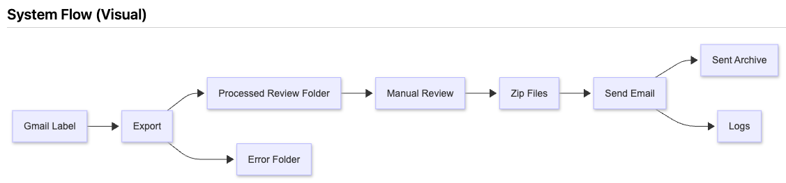

EMAIL AUTOMATION · PYTHON
Examples
Project artifacts that show the generated output, error handling, and overall system flow.
These artifacts come from the existing Python project documentation. They show the output formats and system flow without requiring a reader to browse the repository manually.
System flow

Generated text output
Preview TXT example
============================================================
EMAIL DETAILS
============================================================
Subject : Fw: 100% Remote role! Technical Engineer needed
From : Dominick Benigno <dominickbenigno@yahoo.com>
Date : Wednesday, April 01, 2026, 1:45 AM UTC
Workflow Status : processed_review
Export Format : text
File Name : Fw 100 Remote role Technical Engineer needed.txt
============================================================
Hello,
This is John a Sr. Talent Specialist with Company Inc., I found your resume online and wanted to know if you are open for new opportunities. If yes, Please call me on +123-456-7890 or email your most updated resume on john.doe@company.com
Job details
Job title:
100% Remote role! Technical Engineer needed
Error output
Preview error example
============================================================
ERROR EMAIL DETAILS
============================================================
Subject : Fw: 100% Remote role! Technical Engineer needed
From : Dominick Benigno <dominickbenigno@yahoo.com>
Date : 2026-04-01T01:45:25+00:00
Workflow Status : error
Export Format : text
Message ID : 19d46b78db99b309
Error : Test error - forcing failure path
============================================================Generated Word document
The repository documentation also includes a generated DOCX artifact demonstrating the Word export path.
Publishing note
Review all project examples before making the site public. Remove or redact personal email addresses, credentials, tokens, private content, and sensitive local paths.